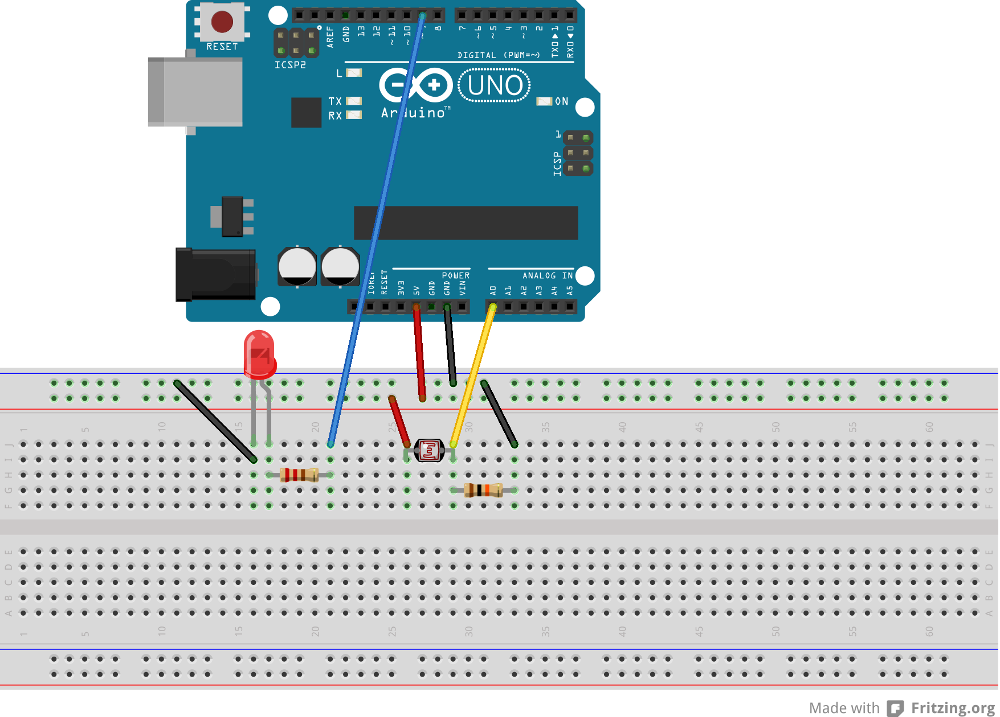

Arduino introduction and interfacing with Processing and SuperCollider
Table of Contents
1 Arduino Basics
Similar to Processing language Arduino has two main structures, a void setup() and a void loop(). In contrast to processing which uses frameRate() function to update the void loop() function, Arduino's "framerate" depends on the program that you have uploaded to your board (see online topic here).
1.1 Arduino important links
- Language Reference
- https://www.arduino.cc/en/Reference/HomePage
- Tutorial Foundations
- https://www.arduino.cc/en/Tutorial/Foundations
1.2 Serial communication
To initialize serial communication of an Arduino board via USB you have to define Serial.begin(), which takes a single argument in bits per second (or baud) that represents how fast your computer sends and receives data from an arduino board.
Serial communication involves pins 0 and 1, also known as TX0 and RX0 for transmitter and receiver respectively. There are two on-board LEDs TX, RX are activated when the board sends or receives serial data. TX and RX are below the on-board LED (L) which is attached to pin 13.

1.3 Analog and digital pins
An Arduino has both analog and digital pins. A standard Arduino board, like UNO, Duemilanove etc, has 6 analog inputs and 14 digital inputs/outputs.
pinMode() function is used to declare if a pin is an input or an output. By default Arduino's (Atmega) pins have been set to inputs. If a pin is defined as INPUT a good value for pullup and pulldown resistor is 10KΩ. Pin 13 has an LED and a resistor on board, which makes it harder to be handle as an input.
Output pins may provide up to 40mA of current, which is enough for LEDs and ICs, but not enough for relays and motors. Typical resistor values that should be used to output pins in order to protect your board are 470Ω and 1kΩ.
Analog input pins use a 10 bit resolution (0-1023 integers), and they can be used as digital pins as well (GPIO). To do so you have to map analog pins using the aliases A0 for analog pin 0 (A1 for pin 1 and so forth).
pinMode(A0, OUTPUT); digitalWrite(A0, HIGH); // set pullup on analog pin 0
- WARNING
- By turning on a pullup will affect the values reported by
analogRead().
If you would like to simulate analog output use the function analogWrite(), which is based on Pulse Width Modulation (PWM). analogWrite() range of values is 0-255.
2 Analog read
2.1 Analog read - PWM output
A simple example using a photoresistor for analog input and an LED for binary output. Original article below:
- Online example
- https://www.arduino.cc/en/Tutorial/AnalogInput
- Requirements
- photoresistor
- 10kΩ resistor

int sensorPin = A0; // select the input pin for the potentiometer int ledPin = 9; // select the pin for the LED int sensorValue = 0; // variable to store the value coming from the sensor void setup() { Serial.begin(9600); // declare the ledPin as an OUTPUT: pinMode(ledPin, OUTPUT); } void loop() { // open Serial monitor to see the values (top-right icon in menu) Serial.println(sensorValue); // read the value from the sensor: sensorValue = analogRead(sensorPin); // turn the ledPin on analogWrite(ledPin, sensorValue/4); delay(sensorValue/4); }
2.2 Analog read - binary output
A piezoelectric sensor that triggers a state transition.
- Online example
- https://www.arduino.cc/en/Tutorial/KnockSensor
- Requirements
- piezoelectric sensor
- 10kΩ resistor or potentiometer (depends on the sensor, see sensor's datasheet)
- LED

int ledPin = 13; int knockSensor = 0; byte val = 0; int statePin = LOW; int THRESHOLD = 100; void setup() { pinMode(ledPin, OUTPUT); } void loop() { val = analogRead(knockSensor); if (val >= THRESHOLD) { statePin = !statePin; digitalWrite(ledPin, statePin); } delay(100); // we have to make a delay to avoid overloading the serial port }
3 Digital read
- IC FSM to Arduino
4 Motor control
4.1 Servo control using a potentiometer

#include <Servo.h> Servo myservo; // create servo object to control a servo int potpin = 0; // analog pin used to connect the potentiometer int val; // variable to read the value from the analog pin void setup() { myservo.attach(9); // attaches the servo on pin 9 to the servo object } void loop() { val = analogRead(potpin); // reads the value of the potentiometer (value between 0 and 1023) val = map(val, 0, 1023, 0, 180); // scale it to use it with the servo (value between 0 and 180) myservo.write(val); // sets the servo position according to the scaled value delay(15); // waits for the servo to get there }
5 Arduino and Processing
5.1 Read integer number
- Processing → Arduino
5.2 Analog input to serial
- Arduino → Processing
We are going to use a potentiometer to make graphics in Processing. Use a potentiometer to send your analog input to processing. See tutorial Graph. Make sure to adjust your serial port properly (see Processing script below Serial.list()[4]).
- Link to Arduino script
- ./src/potensiometerGraph.ino
void setup() { // initialize the serial communication: Serial.begin(9600); } void loop() { // send the value of analog input 0: Serial.println(analogRead(A0)); // wait a bit for the analog-to-digital converter // to stabilize after the last reading: delay(2); }
- Link to Processing script
- ./src/potensiometerGraph.pde
Make sure to have a look at Serial class, serialEvent() and readStringUntil() functions.
import processing.serial.*; Serial myPort; // The serial port int xPos = 1; // horizontal position of the graph float inByte = 0; void setup () { // set the window size: size(400, 300); // List all the available serial ports println(Serial.list()); // select your serial port myPort = new Serial(this, Serial.list()[4], 9600); // don't generate a serialEvent() unless you get a newline character: myPort.bufferUntil('\n'); // set inital background: background(0); } void draw() { // draw the line: stroke(127, 34, 255); line(xPos, height, xPos, height - inByte); // at the edge of the screen, go back to the beginning: if (xPos >= width) { xPos = 0; background(0); } else { // increment the horizontal position: xPos++; } } // a serial event is called when data is available void serialEvent (Serial myPort) { // get the ASCII string: String inString = myPort.readStringUntil('\n'); if (inString != null) { // trim off any whitespace: inString = trim(inString); // convert to an int and map to the screen height: inByte = float(inString); println(inByte); inByte = map(inByte, 0, 1023, 0, height); } }
6 Arduino and SuperCollider
6.1 Analog write - Dimmer
- SuperCollider → Arduino
- ./src/analogWriteDimmer.ino
const int ledPin = 9; // the pin that the LED is attached to void setup() { // initialize the serial communication: Serial.begin(9600); // initialize the ledPin as an output: pinMode(ledPin, OUTPUT); } void loop() { byte brightness; // check if data has been sent from the computer: if (Serial.available()) { // read the most recent byte (which will be from 0 to 255): brightness = Serial.read(); // set the brightness of the LED: analogWrite(ledPin, brightness); } }
- Link to SC3 script
- ./src/analogWriteDimmer.scd
// DIMMER ( p = SerialPort( "/dev/ttyUSB0", //edit to match your port. SerialPort.listDevices baudrate: 9600, //check that baudrate is the same as in arduino sketch crtscts: true); ) //send serial data - slow pulsating ( r = Routine({ inf.do{|i| p.put(i.fold(0, 100).linexp(0, 100, 1, 255).asInteger.postln); 0.02.wait; }; }).play; ) r.stop; p.close;
6.2 Digital write - GUI with buttons
- SuperCollider → Arduino
A simple protocol for serial communication, based on the example by Fredrik Olofsson.
- Link to Arduino script
- ./src/analogWriteDimmer.ino
byte digPins[] = {8, 9, 10, 11, 12, 13}; byte val, cnt = 0; byte digData[] = {0, 0, 0, 0, 0, 0, 0, 0}; void setup() { Serial.begin(38400); for(byte i = 0; i < 6; i++) { pinMode(digPins[i], OUTPUT); } } void loop() { while(Serial.available()) { val = Serial.read(); if(cnt == 0) { if(val == 10) { cnt = 1; } } else if(cnt < 7) { digData[cnt - 1] = val; cnt++; } else { if(val == 11) { for(byte i = 0; i < 6; i++) { digitalWrite(digPins[i], digData[i]); } } else { // serial read error } cnt = 0; // reset counter } } delay(10); }
- Link to SC3 script
- ./src/digitalWriteButtons.scd
( var name = "/dev/ttyUSB0"; //edit to match your serial device var port = SerialPort(name, 38400, crtscts: true); var dig = [10, 0, 0, 0, 0, 0, 0, 11]; var w = Window("buttons write"); var v = HLayoutView(w, Rect(30, 30, 300, 300)); var butt; Array.fill(6, { | i | butt = Button(v, Rect(10, 10, 50, 100)); butt.states_([["pin"++(8+i).asString, Color.black, Color.white], ["pin"++(8+i).asString, Color.black, Color.green]]); butt.action_({|view| dig.put(i+1, (view.value).asInteger); port.putAll(dig.postln)}); }); w.front; CmdPeriod.doOnce({port.putAll([10, 0, 0, 0, 0, 0, 0, 11]); port.close; w.close}); )
6.2.1 Using port registers
7 Appendix
7.1 Resistor color codes
- If you don't have a multimeter to measure the value of a resistor you can either use an online application or calculate the Ohms of your resistor using the table in the wikipedia link below
- https://en.wikipedia.org/wiki/Electronic_color_code#Resistor_color-coding